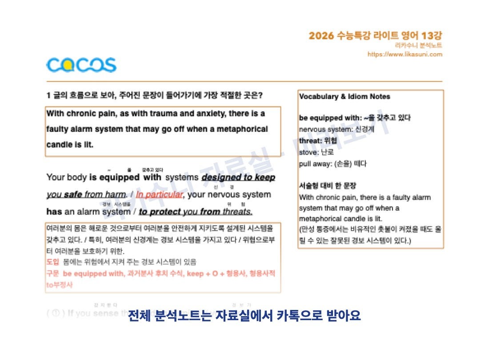

안녕하세요, 이매동 코코스학원 리카수니 원장입니다.
학생 요청으로 2026 수능특강 라이트(Light) 영어 13강 1번 분석노트를 만들었어요.
지문은 교재에 있으니 교재를 펴 놓고 함께 보세요.
· 교재: 2026 수능특강 라이트 영어 (EBS)
· 위치: 13강 1번 (주어진 문장 넣기)
· 정답: ④
우리 몸에는 위험에서 지켜 주는 '경보 시스템'이 있어요.
짧게 지나가는 급성 통증과 달리, 만성 통증은 아주 작은 자극에도 울리는 '잘못된 경보'처럼 작동해서 시간이 갈수록 통증에 더 민감해진다는 흐름이에요.
주어진 문장은 '만성 통증에는 비유적인 촛불만 켜져도 울리는 잘못된 경보가 있다'는 내용이에요.
· ③ 뒤 문장: 만성 통증은 '다르게 작동한다'고만 말하고 어떻게 다른지는 아직 안 나와요.
· ④ 뒤 문장: This can happen ~ 으로 시작하며 관절염 무릎을 살짝 부딪치거나 두통 초기 신호를 느끼는 예가 나와요.
→ This 가 가리킬 '작은 자극에도 울리는 경보'가 바로 주어진 문장이라서 ④ 자리에 들어가요.
①·② → 불난 건물, 뜨거운 난로처럼 '정상적인 경보'의 예가 이어지는 자리예요.
③ → 급성과 만성을 대비하는 문장이 들어가는 자리라, 그 뒤에 주어진 문장이 와야 해요.
⑤ → '시간이 지나며 더 민감해진다'는 마무리 자리예요.

1) as with ~ : '~와 마찬가지로'
→ With chronic pain, as with trauma and anxiety (만성 통증에서는, 트라우마와 불안처럼)
2) 지각동사 sense + 목적어 + -ing, 분사구문 telling ~
3) 결과의 so that, 간접의문문 how it might ~
· be equipped with ~을 갖추고 있다
· nervous system 신경계
· threat 위협
· acute 급성의 ↔ chronic 만성적인
· persist 지속되다
· faulty 잘못된, 결함 있는
· go off (경보가) 울리다
· metaphorical 비유적인
· arthritic 관절염이 있는
· envision 상상하다
· sensitize 민감하게 하다
분석노트 PDF 에 '서술형 대비 한 문장'과 영어 핵심 요약(Core Summary)을 해석과 함께 정리해 두었어요.
끊어 읽기·해석·구문이 정리된 PDF 는 리카수니 자료실에서 카카오 로그인 후 카톡으로 받을 수 있어요.
수능특강 라이트 다른 강·번호도 요청할 수 있어요.
▶ 분석노트 요청하기 (리카수니 자료실)
https://data.likasuni.com/notes/#note-req
※ 지문 출처: 한국교육방송공사(EBS) 2026 수능특강 라이트 영어. 지문 원문과 전체 해석은 싣지 않았어요.
분당 이매동 코코스학원은 초등·중등·고등 영어와 수학을 가르쳐요.
수능특강·모의고사·내신 대비가 궁금하시면 편하게 문의해 주세요.
· 홈페이지: https://www.cocosedu.co.kr/
· 주소: 경기 성남시 분당구 판교로 476 2층